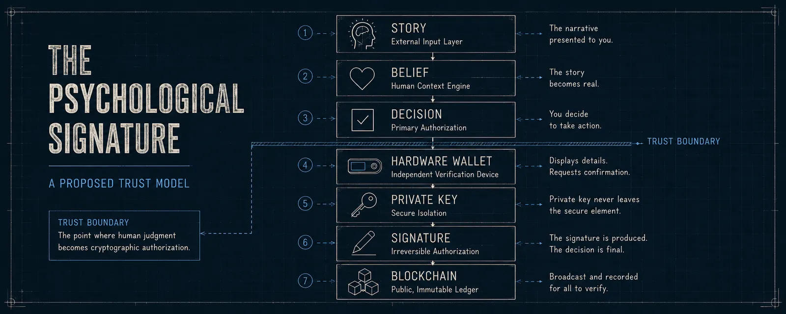

The Psychological Signature
Why the path to clear signing isn't as clear as it seems.

Recently it was reported that Ledger users in Australia had been targeted by a sophisticated attack that involved mailing notices about hardening their wallets for the pending “Quantum Crisis” in cryptography. What many of these users didn't know was not only were these letters not sent by Ledger, but the concept that any wallet could address the quantum problem with any sort of simple firmware update was way oversimplified. This attack allegedly netted the scammers at least 1.4 million AUD according to the authorities in Queensland. At first glance, this looks like another phishing story. I don't think it is.
Normally we would think of signing flow as:
the computer > the transaction > the wallet > the cryptographic signature > the blockchainWhat we are seeing from advanced social engineering attacks changes the equation to look more like this:
story > belief > decision > cryptographic signature > blockchainThis new attack surface is decidedly non-technical and requires a very different approach to handling the threat. So far, the industry's response has largely been focused on education. Wallet manufacturers publish phishing warnings, exchanges remind customers never to share their recovery phrases, and security researchers dissect yesterday's scams in the hope users will recognize tomorrow's. Those efforts matter, but they all rely on the same assumption: that the user will remember the lesson at exactly the moment it matters. I think the challenge is slightly different.
Before a cryptographic signature is ever produced, something else has already happened. The user has accepted a story. They believe they're speaking with Ledger. They believe they're installing a security update. They believe they're recovering forgotten bitcoin. By the time the wallet asks for approval, the decision has often already been made. I'd call that moment the psychological signature.
Clear signing suddenly becomes much more interesting when viewed through that lens. It isn't simply a way of displaying transaction details on a trusted screen. It is an opportunity to interrupt the psychological signature before it becomes a cryptographic one.
The question changes from:
“Does this transaction look correct?”
to:
“Does this transaction actually match the reason I think I'm here?”
That question isn't unique to crypto. It's how humans have always understood exchange. We have never understood payments through numbers alone. We understand them through context: where we are, who we are dealing with, what we expect to receive, and the familiar rituals surrounding the exchange. At a grocery store, the building, the cashier, the displayed total, and the food in front of us all reinforce the same story. Crypto transactions often strip those cultural signals away, leaving an address, an approval request, and a story supplied somewhere else. Clear signing matters because it can return some of that missing context to the moment of authorization — and expose when the transaction on the screen does not match the exchange the user believes they are making.
Viewing the problem through the lens of the psychological signature also changes what we should expect from hardware wallets. Their job is no longer just to protect private keys or display transaction details, but to challenge the story that led the user there. Good clear signing should create a moment of healthy skepticism, asking not only whether the transaction is technically correct, but whether it matches the user's actual intent. The larger problem is that crypto has reproduced the ability to exchange value without reproducing many of the cultural signals people have relied on for centuries to understand an exchange. As those signals disappear, attackers are learning to supply their own. Clear signing, then, is not simply a UX feature. It is part of the larger work of rebuilding context, meaning, and informed consent at the moment a digital decision becomes irreversible.
Trust Ledger claims · sources · uncertainty
Claims checked
- Physical letters impersonating Ledger demanded a "quantum resistance" firmware update via QR code; Queensland Police reported victim losses exceeding $1.4M AUD.
- No simple firmware update can meaningfully "solve" post-quantum cryptography for existing wallets — the premise of the scam was technically hollow.
Primary sources
- Queensland Police Service — "Police warn of scam targeting crypto holders" (July 17, 2026): reports over $1.47M AUD in losses between July 3–7.
- The Courier-Mail — police warn of letterbox crypto scam that has cost Queenslanders over $1.4M.
- Ledger's public warning about the physical-mail phishing campaign (as reported June 2026).
Commercial interests
- The author's employer competes with Ledger. The attack described exploited Ledger's brand, not its devices — a distinction the essay maintains.
What is confirmed / what remains uncertain
- Confirmed: the campaign, its mechanics, and the police-reported loss figures.
- Uncertain: total losses beyond Queensland's reporting window; attribution of the campaign. "The psychological signature" is the author's proposed framing, not an industry term.